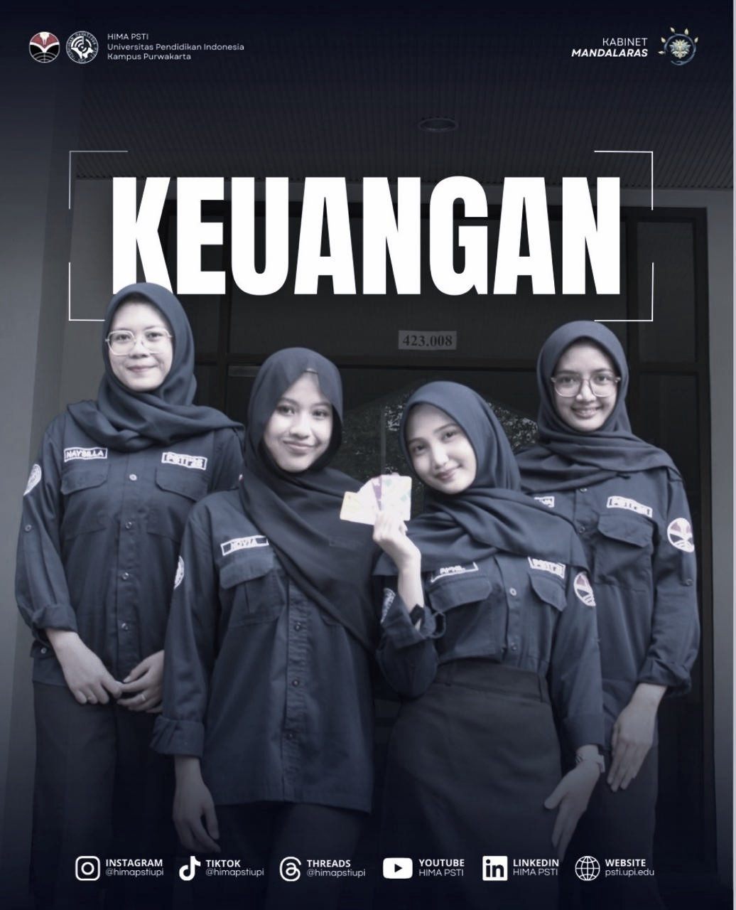
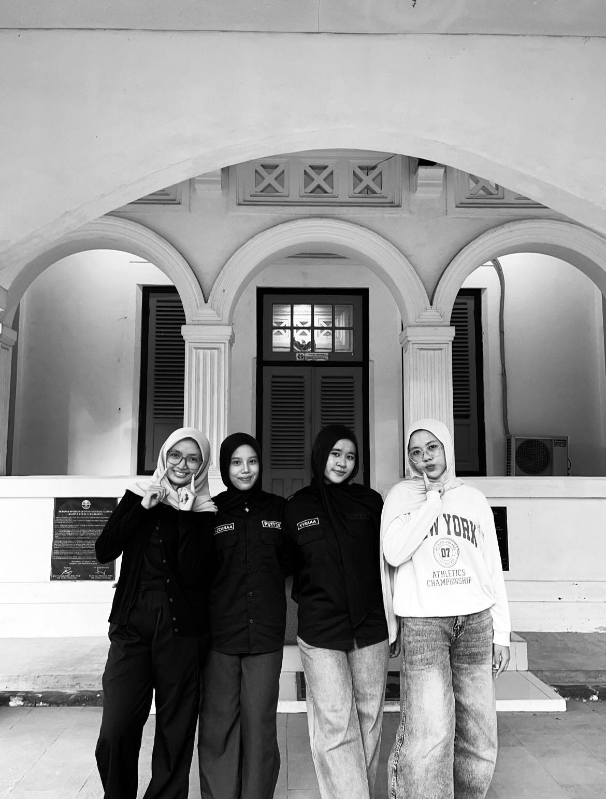
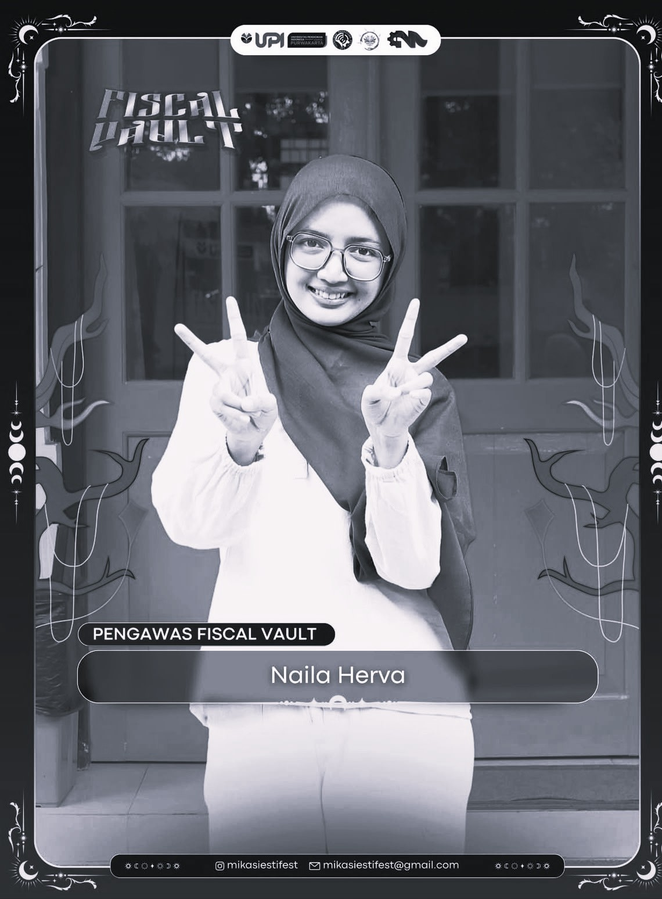
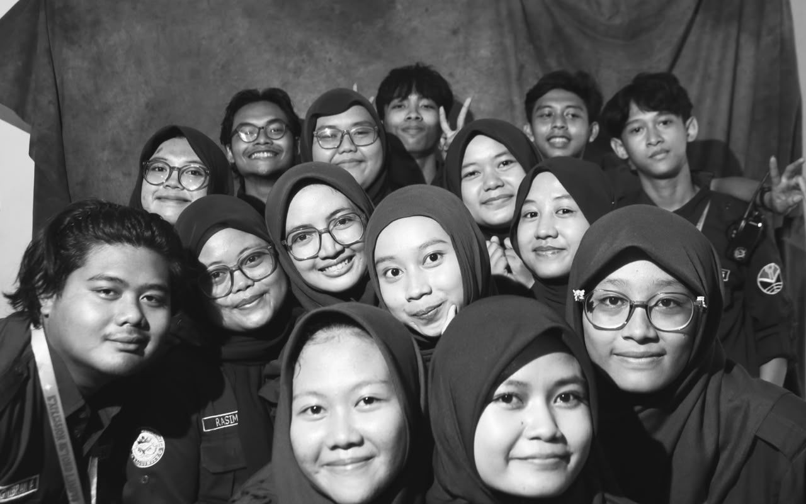
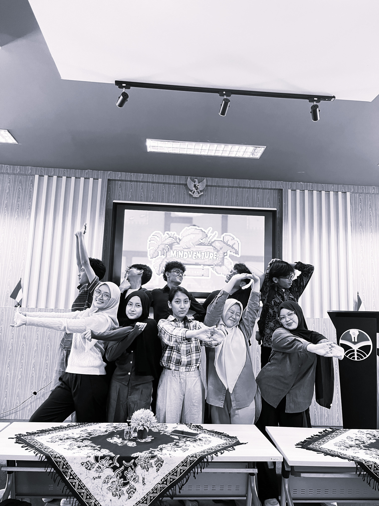
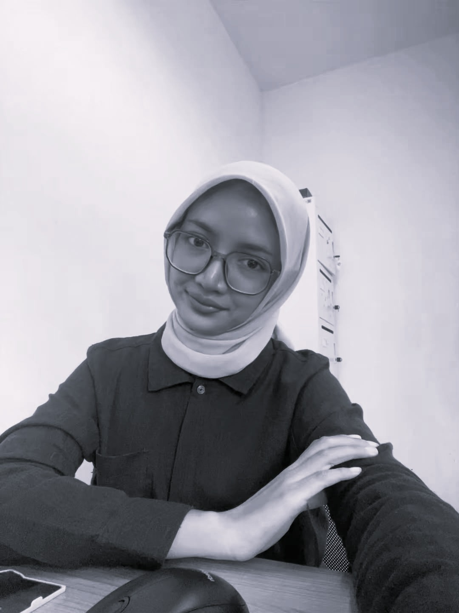
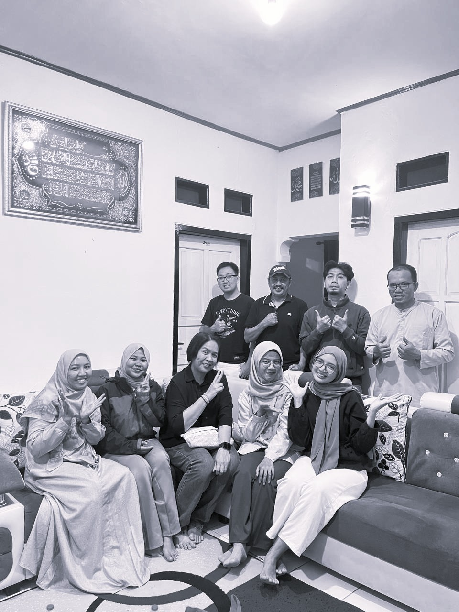
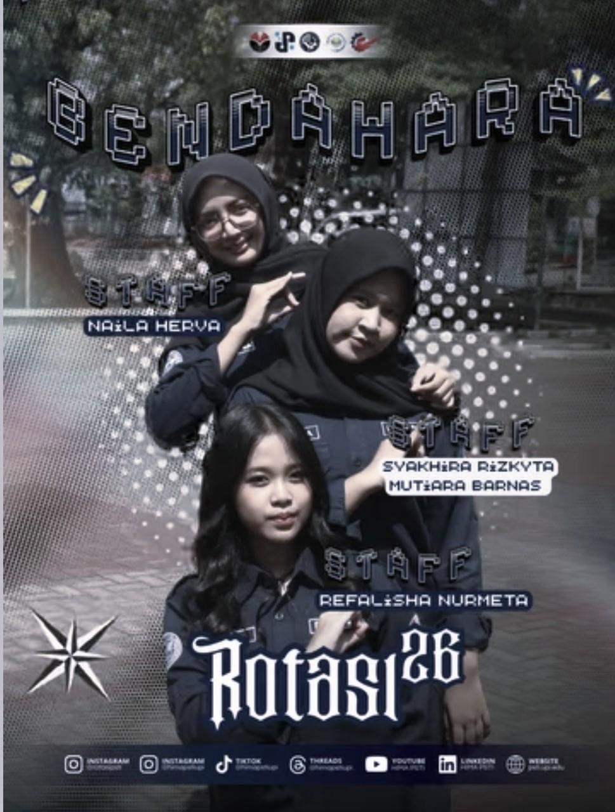
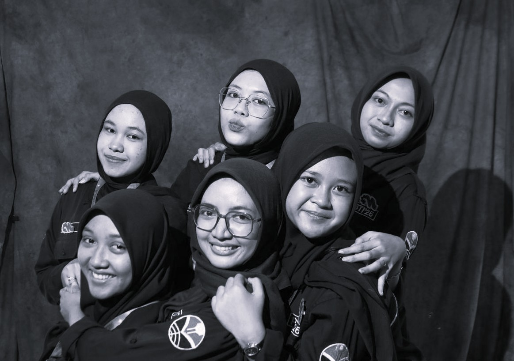
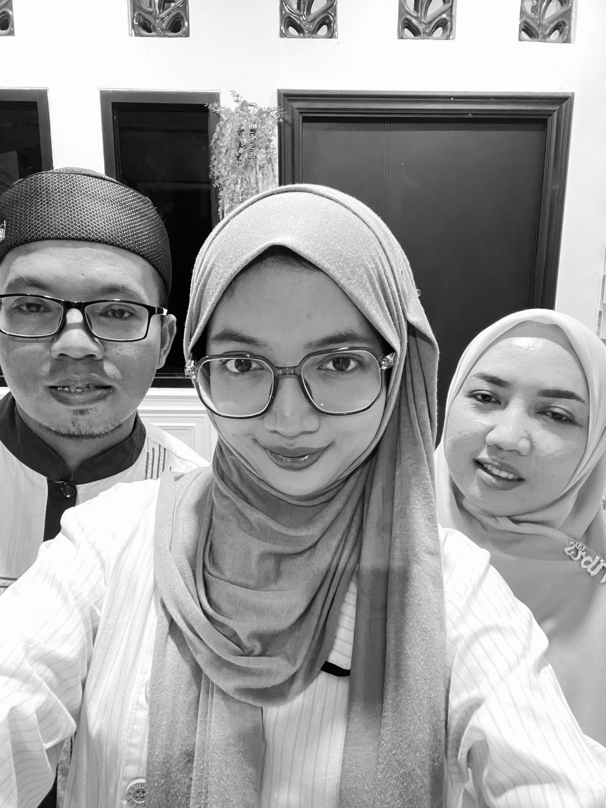

My Journey


Pada Februari 2026, saya diamanahi menjadi bagian dari HIMA PSTI sebagai
anggota Badan Keuangan di Badan Legislatif. Saya bertemu dengan teh Novi
Adawiyah, Naysilla Putri Aisa, dan Zahra April. Pengalaman ini menjadi
langkah awal bagi saya untuk belajar mengelola keuangan organisasi
dengan baik, saya juga belajar pentingnya ketelitian, tanggung jawab,
dan kerja sama

April 2026, saya dipercaya menjadi Koordinator Bendahara dalam kegiatan
Kunjungan Industri ke PT Tera Data Indonusa(Axioo). Ketika menjalankan
tanggung jawab ini, saya dibersamai Naysilla, Nava, dan Syakira untuk
mengelola kebutuhan keuangan selama kegiatan berlangsung. Saya belajar
bagaimana menyusun dan mengontrol anggaran, mencatat setiap transaksi,
mengatur kebutuhan pembayaran, serta memastikan penggunaan dana sesuai
dengan RAB kegiatan.


Pada Mei 2026, saya dipercaya sebagai pengawas dari Divisi Bendahara
dalam kegiatan Mikasi Estifest. Dalam posisi ini, saya melakukan
pengawasan terhadap pengelolaan keuangan dan memastikan proses
administrasi berjalan sesuai dengan ketentuan yang telah ditetapkan.
Pengalaman ini mengajarkan saya untuk lebih teliti dalam memeriksa
pencatatan keuangan, serta berkomunikasi dengan anggota divisi agar
setiap kebutuhan dapat dikelola dengan baik.

Juni 2026, saya dipercaya menjadi Penanggung Jawab untuk mata kuliah
Analisis dan Perancangan Sistem Informasi. Salah satu kegiatan yang saya
koordinasikan adalah pelaksanaan UAS berupa show hasil game yang dibuat
oleh teman kelas saya, yaitu kelas 2B. Dalam prosesnya, saya belajar
mengatur koordinasi antaranggota kelas, menyampaikan informasi, serta
memastikan persiapan kegiatan berjalan sesuai rencana. Pengalaman ini
membantu saya mengembangkan kemampuan komunikasi, koordinasi, dan
tanggung jawab.


Agustus 2026, saya Mendapat kesempatan internship sebagai staff PPIC di
PT Chandra Kemas Abadi, Kecamatan Cibatu, Kabupaten Purwakarta. Saya
belajar banyak tentang proses kerja perusahaan, mulai dari penerimaan
barang, pengelolaan persediaan, proses produksi, penggunaan mesin,
hingga sistem yang mendukung kegiatan operasional

September 2026, saya kembali dipercaya menjadi bagian dari Divisi
Bendahara dalam kegiatan Rotasi. Pengalaman ini menjadi kesempatan bagi
saya untuk menerapkan kembali kemampuan pengelolaan keuangan yang telah
saya pelajari dari pengalaman organisasi sebelumnya, sekaligus
meningkatkan kemampuan bekerja sama dan bertanggung jawab dalam sebuah
tim.

Di setiap perjalanan, ada orang-orang yang membuat setiap proses menjadi
lebih berarti. Sabrina, Delina, Naysilla, Nabila, dan Zahra adalah
beberapa orang yang hadir dalam perjalanan saya. Bersama mereka, saya
berbagi cerita, pengalaman, tantangan, dan banyak momen yang membuat
perjalanan selama kuliah menjadi lebih berwarna. Mereka bukan hanya
teman, tetapi juga bagian dari cerita dan proses saya untuk terus
belajar dan berkembang.

Tak lupa Orang tua saya, support system utama dalam setiap langkah yang
saya jalani. Dukungan, doa, dan kepercayaan mereka menjadi alasan saya
untuk terus belajar, berkembang, dan berusaha menjadi versi terbaik dari
diri saya. Setiap pencapaian yang saya raih tidak lepas dari peran dan
dukungan mereka.
Jika kamu ingin melihat portofolio saya dan bekerja sama, silahkan lihat
di
LinkedIn saya
© 2026 Naila Herva.